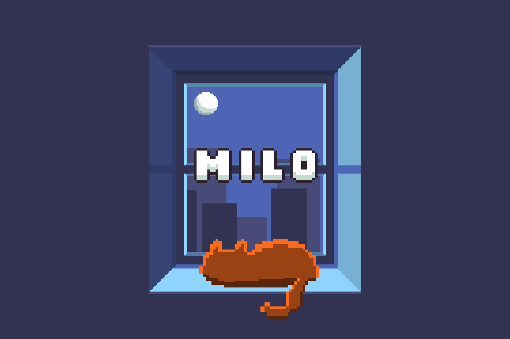
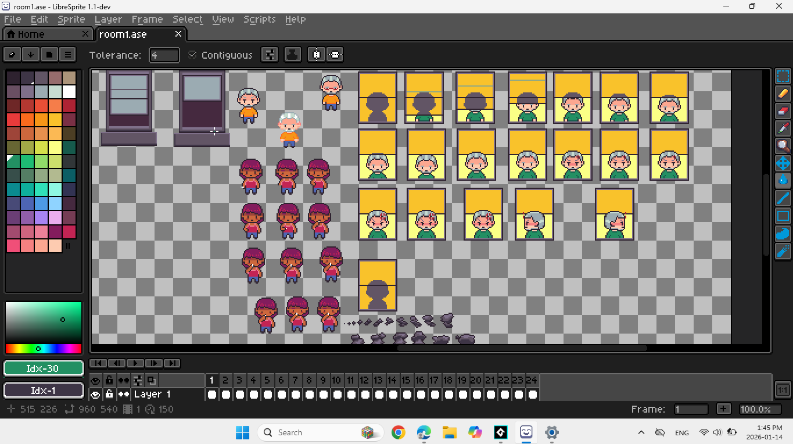
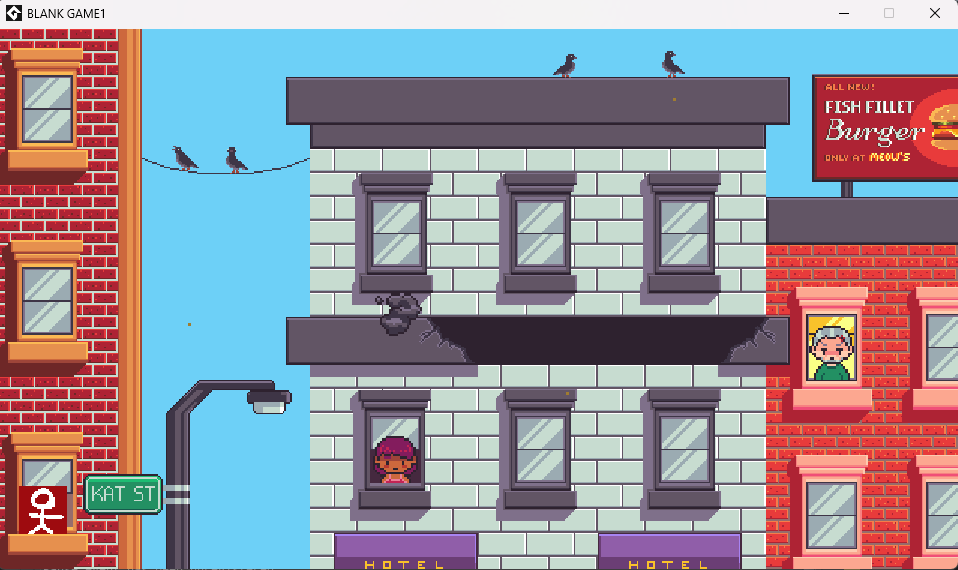
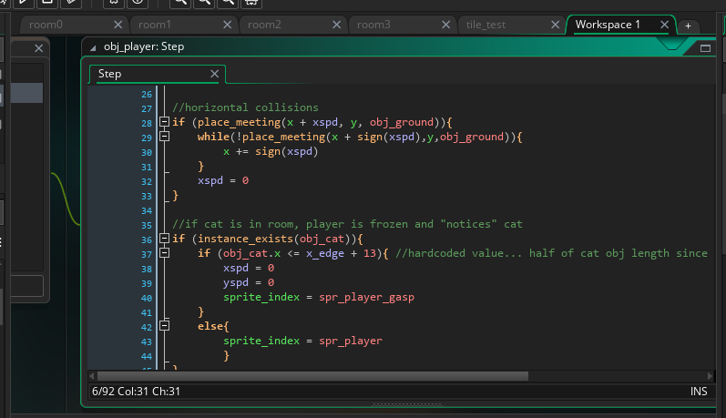

PIXEL PLATFORMER
A short adventure in the form of a pixel platformer

Overview
In this game, you play as a child chasing after their fleeing cat. You travel through short levels, straying further from home, in an attempt to retreive your beloved companion.
This platformer is my first game development project and serves primarily as a learning experience. Rather than focusing on creating a large or highly polished game, my objective was to understand every stage of the development process, from programming mechanics and designing levels to creating pixel art and organizing a multidisciplinary solo project. Every feature added to the game represented an opportunity to experiment, make mistakes, solve problems, and improve my understanding of game development.
Project Type : Personal Project
Tools: GameMaker Studio - Libresprite
Status: In active development • Last Updated: July 2026
Design & Development

Visual Aspects
The game uses a simple pixel-art style that matches the scope of the project while allowing me to create all visual assets myself. Designing the sprites, environments, and interface provided practical experience with animation, colour selection, readability, and maintaining visual consistency across multiple assets.

Level Design
The current version contains multiple playable levels that gradually introduce hazards and platforming challenges. As the player progresses, the surroundings transition from an urban area to a more rural, isolated one. The platforms, hazards, and backgrounds try to represent that. My focus was understanding how level layout influences player movement, pacing, and narratives aspects of the game. Designing the stages required repeatedly testing jumps, adjusting obstacle placement, and refining layouts until progression felt satisfactory.

Scripting
Implementing the game's mechanics provided hands-on experience with scripting gameplay systems from scratch. Player movement, jumping, hazards, and level progression required breaking larger problems into smaller components and debugging them individually. Many systems went through several iterations as I learned better ways to organize code and solve unexpected behaviours. This process reinforced the importance of incremental development and frequent testing throughout a project.
Narrative Aspect
Although the narrative aspect of the game is relatively simple, it is meant to invoke a sense of purpose within the player by giving them a quest. The changing environment and the occasional cat sightings throughout the game aim to make the player curious about what lies ahead. I kept that part of the game minimal as narrative design was not my main focus.
What I Learned
Working on my first game taught me that an efficient workflow is just as important as writing code. Through trial and error, I found that prototyping mechanics before creating detailed art made level design much easier to iterate on. I also became comfortable adapting to new tools. Since GML shares object-oriented concepts with Java, I was able to learn the language quickly while relying on the GameMaker manual to understand engine-specific features. Finally, I improved my pixel art skills throughout the project. By experimenting with shading, color, and small environmental details, I learned how to make simple pixel scenes feel more dynamic and alive.
Looking Forward
The completion of this first game development project has inspired me to further explore modern engines such as Unity and Unreal, as they offer more advanced features and use programming languages that are more closely aligned with current game industry standards. Although GameMaker served its purpose for this project, it has primarily been an entry point into game development. Moving forward, I plan to continue building increasingly ambitious projects while applying the lessons learned from this experience and expanding both my technical and creative skill set.